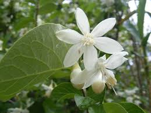

Styracaceae
Storax Family
The Styracaceae family, commonly known as the storax or snowbell family, consists primarily of deciduous or evergreen trees and shrubs. They are recognized for their often beautiful, bell-shaped, usually white flowers, simple alternate leaves, and frequently occurring star-shaped (stellate) hairs on leaves, twigs, and buds. Several species produce commercially important resins (storax or benzoin).
Overview
Styracaceae belongs to the order Ericales, a large and diverse order within the Asterid clade that also includes families like Ericaceae (heaths), Primulaceae (primroses), and Ebenaceae (ebonies). The Storax family comprises about 11 genera and approximately 160 species.
Members of Styracaceae are distributed across temperate and subtropical regions of the Northern Hemisphere (North America, Europe, East Asia) and also extend into tropical South America. They are often found in woodland or forest habitats. Many species are valued horticulturally for their attractive, often fragrant, pendulous flowers (e.g., snowbells, silverbells). The genus Styrax is particularly noted for producing aromatic resins used in perfumes, incense, and traditional medicine.
The family is characterized by its woody habit, alternate simple leaves, actinomorphic flowers typically with fused petals, and the common presence of stellate or lepidote (scale-like) hairs, which are a key diagnostic feature.
Quick Facts
- Scientific Name: Styracaceae
- Common Name: Storax family, Snowbell family
- Number of Genera: Approximately 11 (e.g., Styrax, Halesia, Pterostyrax)
- Number of Species: Approximately 160
- Distribution: Temperate and subtropical Northern Hemisphere, South America
- Evolutionary Group: Eudicots - Asterids - Ericales
Key Characteristics
Growth Form and Habit
Members of the Styracaceae family are typically deciduous or evergreen trees and large shrubs. A defining characteristic is the frequent presence of stellate (star-shaped) or lepidote (scale-like) hairs on young stems, buds, leaves (especially undersides), and floral parts. The bark is often smooth or finely fissured, and some species produce significant amounts of resin.
Leaves
Leaves are simple, arranged alternately along the stem, and lack stipules (estipulate). Leaf margins are usually entire or serrated. Leaf shape varies but is often ovate or elliptic. The presence of stellate or lepidote hairs, particularly on the lower surface, is a key feature for identification.
Inflorescence
Flowers are borne in racemes, panicles, or small clusters (fascicles), or sometimes occur solitarily. Inflorescences are often pendulous (hanging downwards), showcasing the bell-shaped flowers effectively. They typically arise from the axils of leaves or at the ends of branches.
Flowers
Flowers are usually bisexual, actinomorphic (radially symmetrical), and often fragrant. They are typically white and bell-shaped (campanulate). Key floral characteristics include:
- Calyx: Composed of 4-5 sepals, usually fused at the base into a cup, often persistent in fruit.
- Corolla: Composed of 4-7 (usually 5) petals, which are typically fused at the base (sympetalous) or sometimes nearly free. The corolla is often campanulate or funnel-shaped.
- Androecium: Stamens usually number 8-10 (often twice the number of petals), but can range from 4 to many. Filaments are typically flattened and fused to the base of the corolla tube, sometimes forming a staminal tube. Anthers dehisce via longitudinal slits.
- Gynoecium: A single ovary that can be superior, half-inferior, or inferior, composed of 3-5 fused carpels. It typically has 3-5 locules at the base becoming 1 locule towards the apex, containing one to several ovules per locule. The style is single and slender.
Fruits and Seeds
The fruit is variable, typically either a dry or somewhat fleshy drupe (like a cherry, with a hard stone) or a loculicidal capsule. Fruits are often globose or ovoid, sometimes longitudinally winged or ribbed (e.g., Halesia, Pterostyrax). They usually contain one or a few seeds.
Chemical Characteristics
The family is known for the production of balsamic resins, particularly benzoin or storax, obtained from the bark of various Styrax species. These resins contain compounds like benzoic acid, cinnamic acid, and vanillin. Saponins and tannins are also present in various parts of the plants.
Field Identification
Identifying Styracaceae members involves looking for a combination of woody habit, leaf arrangement and hair type, and flower characteristics.
Primary Identification Features
- Woody Habit: Plants are trees or shrubs.
- Stellate/Lepidote Hairs: Check buds, young twigs, and leaf undersides for characteristic star-shaped or scale-like hairs (use a hand lens).
- Alternate, Simple Leaves: Leaves are arranged one per node and are not divided into leaflets. No stipules.
- Actinomorphic, Bell-Shaped Flowers: Flowers are radially symmetrical, usually white, often hanging downwards with fused petals.
- Stamens Fused to Corolla: Stamens are typically attached to the base of the petal tube.
Secondary Identification Features
- Ovary Position Variable: Can be superior, half-inferior, or inferior depending on the genus.
- Fruit Type: Drupe or capsule, sometimes winged.
- Resinous Bark/Wood: Some species exude fragrant resin when cut (especially Styrax).
- Pendulous Inflorescences: Flower clusters often hang downwards.
Seasonal Identification Tips
Identification features are visible at different times:
- Spring/Summer (Flowering): The distinctive bell-shaped, often white flowers are key. Check stamen number and attachment, ovary position.
- Summer/Fall (Fruiting): Observe fruit type (drupe or capsule) and features like wings or ribs.
- All Seasons (Vegetative): Look for the tree/shrub habit, alternate simple leaves, and especially the stellate or lepidote hairs on persistent parts like buds and twigs (crucial for winter ID).
Common Confusion Points
Styracaceae might be confused with other families in the Ericales or unrelated families with similar features:
- Ericaceae (Heath Family): Many shrubs/trees with simple alternate leaves and often bell-shaped flowers, but typically lack stellate hairs and often have urn-shaped (urceolate) corollas and poricidal anthers (pollen released through pores).
- Ebenaceae (Ebony Family): Trees/shrubs with simple alternate leaves, but flowers are usually unisexual and often urn-shaped with fewer stamens. Lack stellate hairs.
- Theaceae (Tea/Camellia Family): Trees/shrubs with simple alternate leaves, but flowers often have numerous stamens and superior ovaries; lack stellate hairs.
- Cornaceae (Dogwood Family - some genera): Some dogwoods (like Cornus alternifolia) have alternate leaves, but flower structure (often small flowers in dense heads with showy bracts) and fruit (drupe) details differ. Lack stellate hairs.
- Hamamelidaceae (Witch Hazel Family): Some have stellate hairs, but flower structure (often strap-like petals, different stamen/ovary structure) is very different.
Field Guide Quick Reference
Look For:
- Trees or shrubs
- Stellate or lepidote hairs (use lens)
- Alternate, simple, estipulate leaves
- Actinomorphic, often white, bell-shaped flowers
- Stamens fused to corolla base
- Drupe or capsule fruit (sometimes winged)
Key Variations:
- Ovary position (superior to inferior)
- Petal fusion (partially to fully fused)
- Fruit type (drupe vs. capsule)
- Presence/absence of fruit wings
- Deciduous vs. Evergreen habit
Notable Examples
Several genera in the Styracaceae family are well-known in horticulture and for their economic products.

Styrax japonicus
Japanese Snowbell
A popular ornamental small tree native to East Asia, prized for its profusion of fragrant, white, bell-shaped flowers that hang below the horizontal branches in late spring. It has smooth grey bark and simple, ovate leaves.

Halesia carolina
Carolina Silverbell
A beautiful understory tree native to the southeastern United States. It produces clusters of white, bell-shaped flowers in spring, followed by distinctive four-winged, dry fruits that persist into winter. Often has multiple trunks and attractive bark.

Styrax benzoin
Benzoin Tree / Gum Benjamin
Native to Southeast Asia (especially Sumatra), this tree is the primary source of benzoin resin, a balsamic resin obtained by tapping the bark. The resin is used extensively in perfumes, incense, flavoring, and traditional medicine. The tree itself has ovate leaves with whitish undersides due to dense hairs.

Pterostyrax hispidus
Fragrant Epaulette Tree
Native to China and Japan, this small tree is known for its long, drooping panicles of fragrant, creamy-white flowers in early summer. The flowers have exserted stamens, giving them a fringed appearance. The fruit is bristly and ribbed, distinguishing it from Styrax.
Phylogeny and Classification
Styracaceae is a well-established family within the large order Ericales, positioned within the core asterid group of eudicots. Molecular phylogenetic studies place Styracaceae sister to a clade containing Diapensiaceae and Symplocaceae. Together, these families form part of the broader Ericales lineage, which originated in the Cretaceous period.
The family's disjunct distribution across continents suggests ancient origins and subsequent fragmentation due to geological events and climate change. Relationships between the genera are reasonably well understood, with genera like Halesia and Pterostyrax being closely related to parts of the large genus Styrax.
Position in Plant Phylogeny
- Kingdom: Plantae
- Clade: Angiosperms (Flowering plants)
- Clade: Eudicots
- Clade: Asterids
- Order: Ericales
- Family: Styracaceae
Evolutionary Significance
Styracaceae holds evolutionary interest due to:
- Biogeography: Its distribution pattern provides insights into historical connections between continents in the Northern Hemisphere and South America.
- Resin Production: The evolution of specialized resin production (benzoin/storax) in Styrax is economically and ecologically significant.
- Morphological Variation: Shows variation in key traits like ovary position and fruit type within a relatively cohesive family structure.
- Position within Ericales: Helps understand the diversification and relationships within this large and ecologically important order.